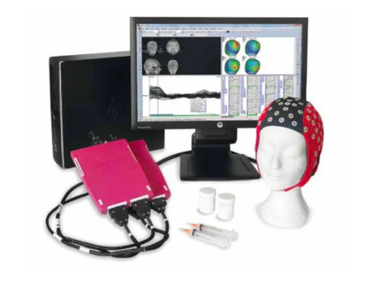

Psytech eego（PPT标注）
高精度脑电与生理信号采集系统

实验室介绍PPT图片
设备概述
用于脑电与生理信号采集，支持疲劳、注意分散和驾驶员状态监测研究。
| 脑电通道 | 64 导（PPT标注） |
|---|---|
| 生理通道 | 24 通道（PPT标注） |
| 研究对象 | 认知状态与驾驶行为 |
| 负责人 | 待补充 |
研究与实验用途
- 疲劳与注意分散状态分析
- 驾驶员状态监测模型研究
- 脑电、眼动与驾驶数据同步分析
配套资料
资料依据：实验室介绍PPT，第5页；通道配置待实机核实。

实验室介绍PPT图片
用于脑电与生理信号采集，支持疲劳、注意分散和驾驶员状态监测研究。
| 脑电通道 | 64 导（PPT标注） |
|---|---|
| 生理通道 | 24 通道（PPT标注） |
| 研究对象 | 认知状态与驾驶行为 |
| 负责人 | 待补充 |